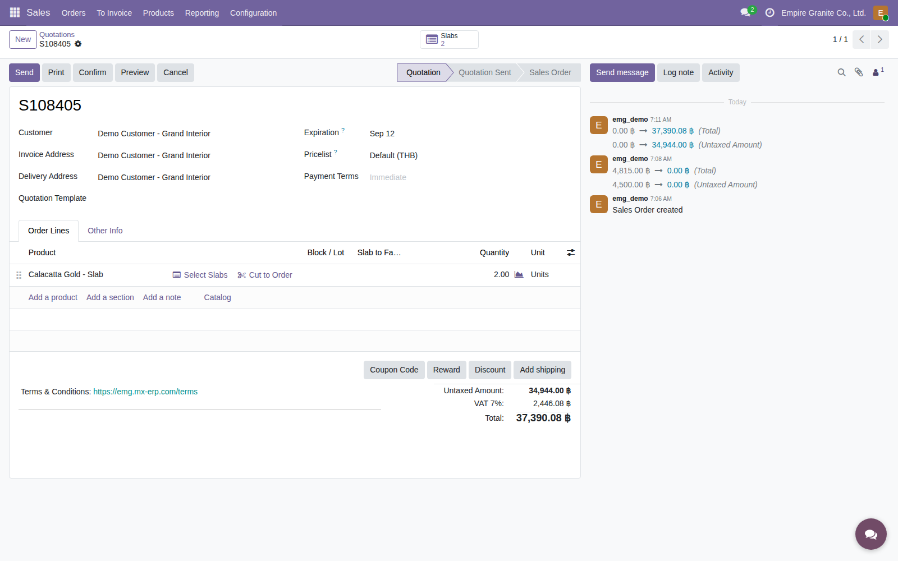
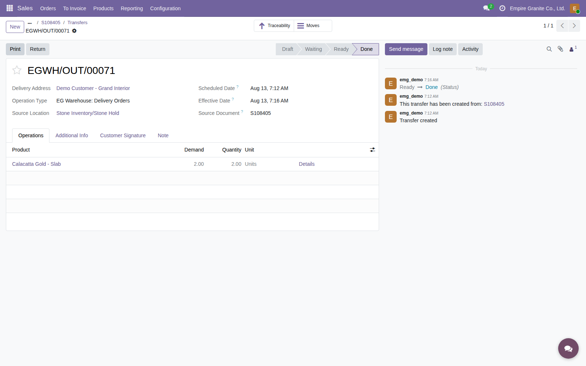

Empire Stone × Empire Granite — QA
Test Cases: E2E Flow — Mode 2 (Ready-Made Slab)
เรื่องราวเดียวต่อเนื่องกันตั้งแต่มีแผ่น/ล็อตหินพร้อมขายอยู่แล้วในสต็อกจนถึงจบเรื่อง ไม่ใช่การเทสฟีเจอร์แยกส่วน และไม่มีข้อไหนเป็นการดักฟิลด์บังคับ/error ทั่วไป (ยกเว้นข้อ Scan Verification ซึ่งเป็น gate จริงของกระบวนการ) — เดินตามได้เองแม้ไม่ใช่ technical user ครอบคลุมทั้ง 2 เส้นทางย่อยของโหมด 2: ขายทีละแผ่นตามเลข Serial และขายบางส่วนจากล็อต ตัวเลข "ตัวอย่างจริง" มาจากการรันจริงที่บันทึกไว้แล้วในเอกสาร E2E ของแต่ละเส้นทาง ไม่ใช่ตัวเลขสมมติ
12Test Case ทั้งหมด
4หมวด
7High Priority
5Medium Priority
0Low Priority
E1. ขาย (Sale — Mode 2, Serial per-slab)
ADR-002/006/009 — เลือกทีละแผ่นตามเลข Serial · 3 test cases
| TC ID | Scenario | Precondition | Steps | ข้อมูลตัวอย่าง | Expected Result | Priority | หน้าจอจริง |
|---|---|---|---|---|---|---|---|
| TC-E2E-M2-01 | เพิ่มบรรทัดสินค้า Material โหมด Serial ใน Sale Order | มีแผ่นหินสถานะ Available อยู่แล้วอย่างน้อย 2 แผ่น จาก Material เดียวกันที่ตั้ง Pricing Mode = Serial (per-slab) |
|
ลูกค้า = "ทดสอบ E2E - Test Customer" สินค้า = Material โหมด Serial ที่มีแผ่นพร้อมขาย |
เพิ่มบรรทัดสำเร็จ ปุ่ม "Select Slabs" ปรากฏบนบรรทัดนั้น (ไม่ใช่ "Select Lot Stock") | Medium |  |
| TC-E2E-M2-02 | กด "Select Slabs" เลือกหลายแผ่นพร้อมกันตามเลข Serial | ทำ TC-E2E-M2-01 เสร็จแล้ว |
|
เลือก 2 แผ่น = BDL-00014-1, BDL-00014-2 | บรรทัด SO ผูกทั้ง 2 แผ่น จำนวนรวมเป็น Sq.Mt. ของทั้ง 2 แผ่นรวมกันอัตโนมัติ (ตัวอย่างจริง: รวม 8.32 ตร.ม.) | High |  ภาพหน้าต่างเลือกแผ่นเอง ดูได้ที่ presentations/e2e-mode2-slab.html (mode2-shot-05) — ภาพนี้คือผลลัพธ์หลังกด Confirm Selection แล้ว |
| TC-E2E-M2-03 | ยืนยัน (Confirm) Sale Order — ราคาเฉลี่ยคำนวณจากขนาดจริงแต่ละแผ่น | ทำ TC-E2E-M2-02 เสร็จแล้ว |
|
- | SO เปลี่ยนสถานะเป็น Sales Order ราคาต่อหน่วยเป็นค่าเฉลี่ยถ่วงน้ำหนักจากขนาดจริงของทุกแผ่น (ไม่ใช่ราคาคงที่ต่อแผ่น) — ตัวอย่างจริง: S108405, 8.32 ตร.ม. × 4,200/ตร.ม. เฉลี่ย = 34,944 (ก่อน VAT) มี Delivery Order เกิดขึ้นอัตโนมัติ 1 ใบ | High |  |
E2. ขาย (Sale — Mode 2, Lot aggregate)
ADR-020 — ระบุจำนวนตร.ม.บางส่วนจากล็อต ไม่ต้องขายทั้งล็อต · 3 test cases
| TC ID | Scenario | Precondition | Steps | ข้อมูลตัวอย่าง | Expected Result | Priority | หน้าจอจริง |
|---|---|---|---|---|---|---|---|
| TC-E2E-M2-04 | เพิ่มบรรทัดสินค้า Material โหมด Lot ใน Sale Order | มีล็อตหินสถานะ Available อยู่แล้ว จาก Material ที่ตั้ง Pricing Mode = Lot (aggregate, cheap stone) |
|
สินค้า = Bianco Perla Marble Slab (Material โหมด Lot) | เพิ่มบรรทัดสำเร็จ ปุ่ม "Select Lot Stock" ปรากฏบนบรรทัดนั้นแทนที่จะเป็น "Select Slabs" | Medium |  |
| TC-E2E-M2-05 | กด "Select Lot Stock" ระบุจำนวนตร.ม.บางส่วนจากล็อต | ทำ TC-E2E-M2-04 เสร็จแล้ว |
|
ล็อต = BP-B-0001 (เหลือ 4.00 ตร.ม. จากทั้งล็อต 6.00 ตร.ม.) Quantity to Sell (Sq.Mt.) = 1.50 |
บรรทัด SO ผูก Lot ถูกต้อง จำนวน/ราคารวมปรับตาม 1.50 ตร.ม. ที่เลือกทันที ไม่มีการเลือกแผ่นเดี่ยวใดๆ | High |  |
| TC-E2E-M2-06 | ยืนยัน (Confirm) Sale Order โหมด Lot | ทำ TC-E2E-M2-05 เสร็จแล้ว |
|
- | SO เปลี่ยนสถานะเป็น Sales Order มี Delivery Order เกิดขึ้นอัตโนมัติ 1 ใบ — ตัวอย่างจริง: S108370, 1.50 ตร.ม. × 1,200/ตร.ม. = 1,800 (ก่อน VAT) ส่วนที่เหลือของล็อตเดิม (2.50 ตร.ม.) ยังคงพร้อมขายต่อได้ตามปกติ | High |  |
E3. จัดส่ง (Delivery — Scan Verification)
ADR-009 — ต้องสแกน/กรอก Serial ให้ตรงก่อน Validate เสมอ ใช้ร่วมกันทั้ง Serial และ Lot · 2 test cases
| TC ID | Scenario | Precondition | Steps | ข้อมูลตัวอย่าง | Expected Result | Priority | หน้าจอจริง |
|---|---|---|---|---|---|---|---|
| TC-E2E-M2-07 | พยายาม Validate ใบส่งของโดยยังไม่กรอก Scanned Serial ให้ตรง หมายเหตุ: กันส่งแผ่น/ล็อตผิดให้ลูกค้าโดยไม่ได้ตรวจสอบก่อน (ADR-009) — ใช้ตรรกะเดียวกันไม่ว่าเป็นบรรทัด Serial หรือ Lot |
ทำ TC-E2E-M2-03 หรือ TC-E2E-M2-06 เสร็จแล้ว มีใบส่งของสถานะ Ready รออยู่ |
|
- | ระบบฟ้อง error สองภาษาทันที: "สแกน Serial ไม่ตรง กรุณาสแกนให้ครบก่อน Validate" พร้อมระบุชื่อ Serial ที่ยังไม่ตรง บันทึกไม่ผ่าน | High |  ภาพจากเส้นทาง Serial — เส้นทาง Lot มี error หน้าตาเดียวกัน ดูได้ที่ presentations/e2e-mode2-lot-stock.html (lot2-06-scan-error) |
| TC-E2E-M2-08 | กรอก/สแกน Scanned Serial ให้ตรงครบทุกบรรทัดแล้ว Validate | ทำ TC-E2E-M2-07 เสร็จแล้ว (เจอ error มาก่อน) |
|
Scanned Serial ของแต่ละบรรทัด = Serial/Lot เดียวกับที่ระบบจองไว้ (เช่น BDL-00014-1, BDL-00014-2 หรือ BP-B-0001) | ใบส่งของเปลี่ยนสถานะเป็น Done สำเร็จ — แผ่น/ปริมาณที่ขายหายจากสต็อกที่ขายได้ (Available) แล้ว | High |  |
E4. บัญชี (Accounting + Payment)
ออกใบแจ้งหนี้ + รับชำระเงิน + ตรวจรายการบัญชี · 4 test cases
| TC ID | Scenario | Precondition | Steps | ข้อมูลตัวอย่าง | Expected Result | Priority | หน้าจอจริง |
|---|---|---|---|---|---|---|---|
| TC-E2E-M2-09 | สร้างและยืนยันใบแจ้งหนี้ลูกค้า (Customer Invoice) | ทำ TC-E2E-M2-08 เสร็จแล้ว |
|
- | ใบแจ้งหนี้สถานะ Posted ยอดรวมตรงกับ SO รวม VAT — ตัวอย่างจริง Serial: INV/2026/00017 (37,390.08); ตัวอย่างจริง Lot: INV/2026/00016 (1,926.00) | High |  ภาพตัวอย่าง Serial — ตัวอย่าง Lot (INV/2026/00016) ดูได้ที่ presentations/e2e-mode2-lot-stock.html (lot2-11-invoice-posted) |
| TC-E2E-M2-10 | รับชำระเงิน (Register Payment) บนใบแจ้งหนี้ หมายเหตุ: จุดนี้เป็นส่วนต่างจากเอกสาร Golden Path ของ Mode 1 ซึ่งไม่ได้เดินไปถึงขั้นตอนรับชำระเงิน — ที่นี่มีข้อมูลจริงยืนยันแล้วว่าไหลไปจนจบ |
ทำ TC-E2E-M2-09 เสร็จแล้ว (Invoice = Posted) |
|
- | ใบแจ้งหนี้ขึ้นสถานะ "Paid" (Payment Status) — ตัวอย่างจริง: INV/2026/00016 จบที่สถานะ Posted + Paid | Medium |  |
| TC-E2E-M2-11 | ตรวจรายการบัญชีบนใบแจ้งหนี้ (รายได้ + VAT + ลูกหนี้) | ทำ TC-E2E-M2-09 เสร็จแล้ว |
|
- | เห็นเครดิต Sales Revenue, เครดิต Output VAT, เดบิต Trade Receivables (รวม) ตรงตามยอดใบแจ้งหนี้ พร้อมคู่ COGS/Inventory ที่ระบบแนบมาด้วยอัตโนมัติบนใบแจ้งหนี้ใบเดียวกัน (เดบิต COGS / เครดิต Inventory) | Medium | — |
| TC-E2E-M2-12 | ตรวจว่าต้นทุนขาย (COGS) ถูกบันทึกซ้ำหรือไม่ — คาดว่าจะเกิดเหมือน Mode 1 แต่ยังไม่ได้ verify ซ้ำสำหรับ Mode 2 ⚠️ ยังไม่ได้ทดสอบจริงสำหรับเคสนี้โดยเฉพาะ — เป็นการคาดการณ์จากสาเหตุเดียวกันกับ TC-E2E-M1-12 (Odoo native display_type='cogs' บนใบแจ้งหนี้ + Journal Entry แยกจากใบส่งของ) เพราะเป็นกลไก stock valuation มาตรฐานของ Odoo ไม่ใช่โค้ดเฉพาะของโหมดการขาย ไม่ควรถือว่ายืนยันแล้วจนกว่าจะเปิด Journal Entries ของ S108405/INV-00017 จริงมาเทียบ |
ทำ TC-E2E-M2-08 เสร็จแล้ว (Delivery = Done) |
|
- | (ยังไม่ verify) หากพฤติกรรมเหมือน Mode 1 จะเห็นคู่ COGS/Inventory ซ้ำอีกชุดในบัญชีคนละตัว — ถ้าพบจริง ให้ถือเป็น known issue เดียวกับ TC-E2E-M1-12 ไม่ใช่บั๊กใหม่ ต้องแจ้งทีม dev รวมกัน | Medium | — |